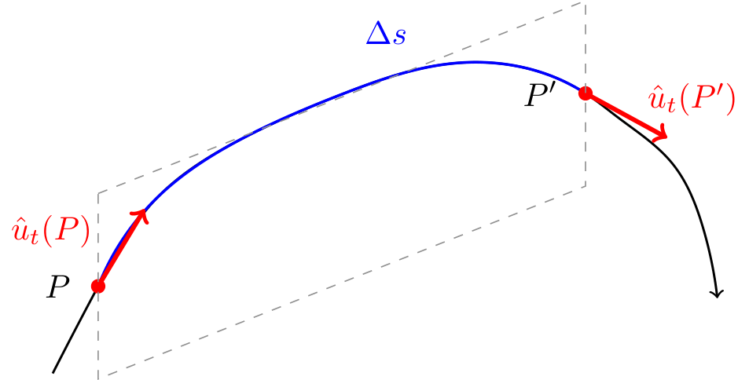
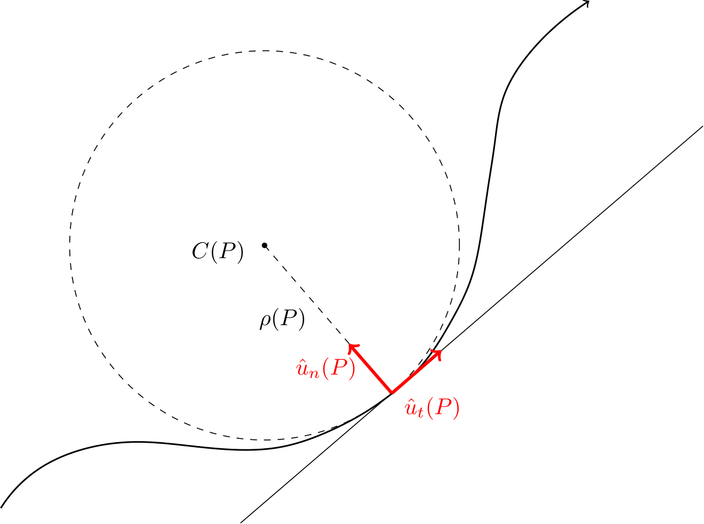
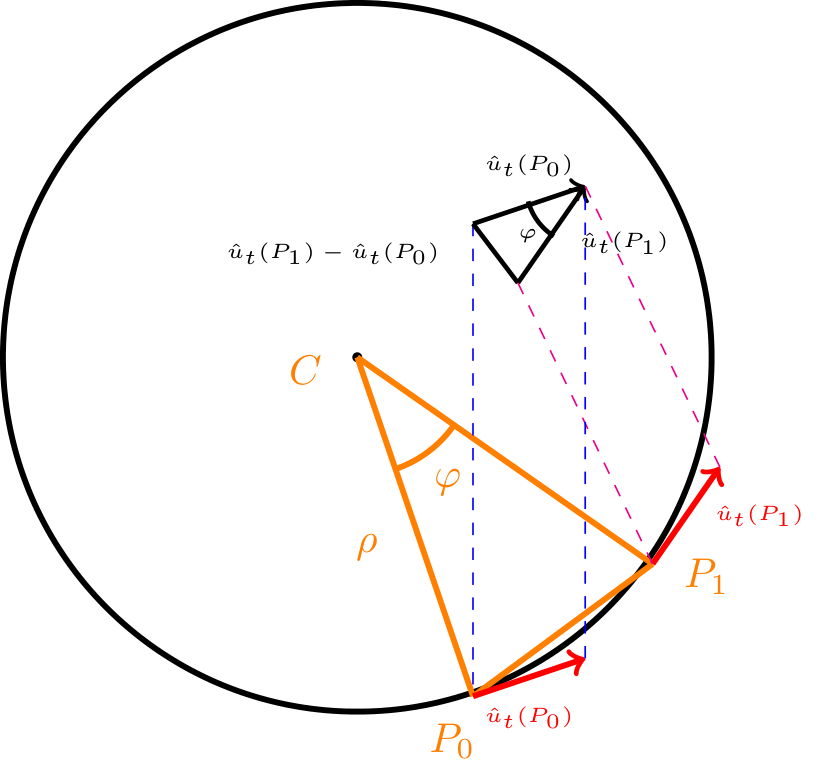
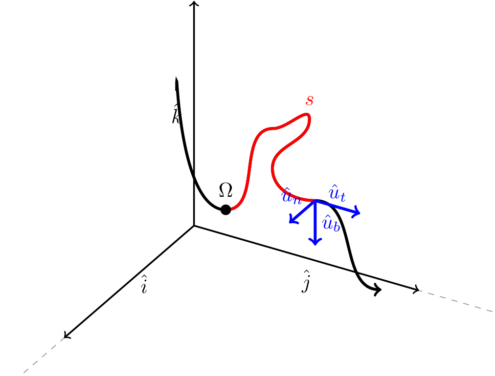

Definizione - Cinematica
La Cinematica, che fa parte della parte della Fisica che studia i moti, ovvero la Meccanica, descrive il moto dei corpi dal punto di vista spazio-temporale.
Definizione - Sistemi di riferimento
Dato che il moto di un corpo è un concetto relativo (ovvero deve essere riferito ad altri corpi), è necessario individuare un certo numero di corpi che non cambiano la loro posizione.
Questi corpi (definiti fissi), insieme ad osservatori, operatori e strumenti di misura compongono un sistema di misura.
Questi corpi (definiti fissi), insieme ad osservatori, operatori e strumenti di misura compongono un sistema di misura.
Definizione - Schematizzazione a punto materiale
Dato che i corpi possono avere forme e misure varie, risulta complesso trattare la moltitudine di casi. Si adotta quindi una schematizzazione che tratta i corpi come punti geometrici (o materiali) dotati di massa (poi utile studiarne altre proprietà). Si tratta comunque di un'approssimazione accettabile solo se le dimensioni dei corpi sono trascurabili rispetto alle distanze percorse.
Osservazioni personali - Ad esempio
Consideriamo il caso di una nave in mezzo all'oceano: in questo caso si ha che l'approssimazione funziona (in quanto l'oceano è molto più grande della nave) mentre non funzionerebbe se trattassimo il caso di una nave in mezzo ad un porto, in cui è necessario considerare ogni piccolo spostamento.
Definizione - Corpo in moto e traiettoria
Un corpo si dice in moto rispetto ad un sistema di riferimento \( S\) se la sua posizione (indicata da un vettore \( r\)) varia nel tempo.
Ipotizzando che tale posizione vari con continuità (si abbia quindi una funzione continua), si ha che è possibile descrivere la traiettoria, ovvero l'insieme delle posizioni occupate dal corpo nel suo moto, con la funzione vettoriale \( \vec{r}(t)\). Se consideriamo poi di esprimere tale posizione rispetto agli assi cartesiani, si avrà che \( r(t)\) è così composta (in tre dimensioni) \[ \vec{r}(t) = r_x(t) \cdot \hat{i} + r_y(t) \cdot \hat{j} + r_z(t) \cdot \hat{k} \]
Ipotizzando che tale posizione vari con continuità (si abbia quindi una funzione continua), si ha che è possibile descrivere la traiettoria, ovvero l'insieme delle posizioni occupate dal corpo nel suo moto, con la funzione vettoriale \( \vec{r}(t)\). Se consideriamo poi di esprimere tale posizione rispetto agli assi cartesiani, si avrà che \( r(t)\) è così composta (in tre dimensioni) \[ \vec{r}(t) = r_x(t) \cdot \hat{i} + r_y(t) \cdot \hat{j} + r_z(t) \cdot \hat{k} \]
Definizione - Vettori velocità media e velocità istantanea
Considerando
Per informazioni più "puntali" (ovvero ad un certo istante \( t_0\)) si può pensare di ridurre l'intervallo \( \Delta t\) a \( 0\), ovvero \[ \vec{v}_{ist}(t_0) = \lim_{\Delta t \to 0} \frac{\vec{r}(t_0 + \Delta t) - \vec{r}(t_0)}{\Delta t} \] che è esattamente la definizione di derivata della traiettoria rispetto al tempo, da cui si ha che la funzione dei vettori velocità istantanea (\( \vec{v}(t)\)) sarà \[ \vec{v}_{ist}(t) = \frac{d\vec{r}(t)}{dt} \] Considerando ora la direzione del vettore velocità istantanea, si ha che al ridursi di \( \Delta t\), il vettore spostamento tende ad avere direzione tangente alla traiettoria nel punto \( t_0\). Sempre considerando \( \Delta t \to 0\), si ha che il modulo del vettore spostamento (\( \mid \vec{r}(t_1) - \vec{r}(t_0) \mid\)) tende ad avere valore uguale allo spazio effettivamente percorso (in una dimensione , sarebbe simile alla lunghezza del segmento fra \( r(t_1)\) e \( r(t_0)\)).
Quindi ipotizzando che la traiettoria sia indicata come \[ \vec{r}(t) = r_x(t) \cdot \hat{i} + r_y(t) \cdot \hat{j} + r_z(t) \cdot \hat{k} \] si avrà che la velocità istantanea sarà uguale a \[ \begin{array}{ccl} \vec{v}(t) & = & r_x'(t) \cdot \hat{i} + r_y'(t) \cdot \hat{j} + r_z'(t) \cdot \hat{k} \\ & = & v_x(t) \cdot \hat{i} + v_y(t) \cdot \hat{j} + v_z(t) \cdot \hat{k} \end{array} \] Considerando la definizione, si ha che le dimensioni fisiche della velocità sono il rapporto tra una lunghezza ed un tempo, quindi si ha che \[ [v] = [L \cdot T^{-1}] \] che nel Sistema Internazionale equivale al \( \mathrm{ \, \frac{m}{s} }\) (metro al secondo).
- una traiettoria \( \vec{r}(t)\);
- due istanti \( t_0\) e \( t_1 = t_0 + \Delta t\);
- due punti \( P_0\) e \( P_1\) tali che \begin{aligned} & P_0 = \vec{r}(t_0) & P_1 = \vec{r}(t_1) \end{aligned}
è possibile calcolare semplicemente il vettore della velocità media, calcolando \[ \vec{v}_{media}(t_0, t_1) = \frac{\vec{r}(t_1) - \vec{r}(t_0)}{t_1 - t_0} = \frac{\vec{r}(t_0 + \Delta t) - \vec{r}(t_0)}{\Delta t} = \frac{\Delta \vec{r}}{\Delta t} \]
Considerando quindi il vettore spostamento tra \( P_0\) e \( P_1\) (il vettore differenza tra \( \vec{r}(t_1)\) e \( \vec{r}(t_0)\)) e il vettore velocità media (che non è altro che il vettore spostamento moltiplicato per lo scalare \( \frac{1}{\Delta t}\)) si ha che hanno stessa direzione.
Per informazioni più "puntali" (ovvero ad un certo istante \( t_0\)) si può pensare di ridurre l'intervallo \( \Delta t\) a \( 0\), ovvero \[ \vec{v}_{ist}(t_0) = \lim_{\Delta t \to 0} \frac{\vec{r}(t_0 + \Delta t) - \vec{r}(t_0)}{\Delta t} \] che è esattamente la definizione di derivata della traiettoria rispetto al tempo, da cui si ha che la funzione dei vettori velocità istantanea (\( \vec{v}(t)\)) sarà \[ \vec{v}_{ist}(t) = \frac{d\vec{r}(t)}{dt} \] Considerando ora la direzione del vettore velocità istantanea, si ha che al ridursi di \( \Delta t\), il vettore spostamento tende ad avere direzione tangente alla traiettoria nel punto \( t_0\). Sempre considerando \( \Delta t \to 0\), si ha che il modulo del vettore spostamento (\( \mid \vec{r}(t_1) - \vec{r}(t_0) \mid\)) tende ad avere valore uguale allo spazio effettivamente percorso (in una dimensione , sarebbe simile alla lunghezza del segmento fra \( r(t_1)\) e \( r(t_0)\)).
Quindi ipotizzando che la traiettoria sia indicata come \[ \vec{r}(t) = r_x(t) \cdot \hat{i} + r_y(t) \cdot \hat{j} + r_z(t) \cdot \hat{k} \] si avrà che la velocità istantanea sarà uguale a \[ \begin{array}{ccl} \vec{v}(t) & = & r_x'(t) \cdot \hat{i} + r_y'(t) \cdot \hat{j} + r_z'(t) \cdot \hat{k} \\ & = & v_x(t) \cdot \hat{i} + v_y(t) \cdot \hat{j} + v_z(t) \cdot \hat{k} \end{array} \] Considerando la definizione, si ha che le dimensioni fisiche della velocità sono il rapporto tra una lunghezza ed un tempo, quindi si ha che \[ [v] = [L \cdot T^{-1}] \] che nel Sistema Internazionale equivale al \( \mathrm{ \, \frac{m}{s} }\) (metro al secondo).
Definizione - Vettori accelerazione media e accelerazione istantanea
Considerando
- una funzione che descrive le velocità istantanea di una traiettoria \( \vec{v}(t)\);
- due istanti \( t_0\) e \( t_1 = t_0 + \Delta t\);
- due punti vettori velocità \( v(t_0)\) e \( v(t_1)\)
Dimostrazione - Derivata di un vettore a modulo costante
Data la proposizione
Enunciato
Considendo un vettore \( \vec{v}(t)\) a modulo costante, ovvero \[ \mid \vec{v}(t) \mid = \lambda \qquad \forall t \in \mathbb{R} \] si ha che il vettore \( \vec{v}(t)\) è ortogonale al vettore derivata \( \frac{d\vec{v}}{dt}(t)\), ovvero \[ \vec{v}(t) \perp \frac{d\vec{v}}{dt}(t) \]
Dimostrazione:
Per dimostrare questa proposizione, consideriamo che se \begin{aligned} & \mid \vec{v}(t) \mid \ = const & \iff \\ & \vec{v}(t) \bullet \vec{v}(t) = \vec{v}^2(t) = const & \end{aligned} allora, si ha che \begin{aligned} & \frac{d\vec{v}^2}{dt}(t) = 0 & \iff \\ & \frac{d(\vec{v} \bullet \vec{v})}{dt}(t) = 0 & \iff \\ & \frac{d(\vec{v})}{dt} \bullet \vec{v} + \frac{d(\vec{v})}{dt} \bullet \vec{v} = 0 & \iff \\ & 2 \vec{v} \bullet \frac{d\vec{v}}{dt} = 0 & \end{aligned} che è la definizione di vettori ortogonali.
Esempio - Problema diretto della cinematica
La posizione di un punto materiale è individuata dal vettore posizione \[ \vec{r}(t) = (t^5 - 2) \cdot \hat{i} + 3t \cdot \hat{j} - t^2 \cdot \hat{k} \] con \( t\) espresso in secondi ed \( r\) in metri. Determinare la velocità e l'accelerazione istantanea in \( t = 0 \mathrm{ \, s }\).
Per ottenere la velocità istantanea, è necessario calcolare la derivata prima delle componenti della traiettoria, ovvero \[ \vec{r}(t) = \left\{ \begin{array}{ccl} r_x(t) & = & t^5 - 2 \\ r_y(t) & = & 3t \\ r_z(t) & = & -t^2 \end{array} \right. \quad \implies \quad \vec{v}(t) = \left\{ \begin{array}{ccl} v_x(t) & = & 5t^4 \\ v_y(t) & = & 3 \\ v_z(t) & = & -2t \end{array} \right. \] Si ha quindi che il vettore velocità istantanea in \( t=0\) è uguale a \[ \vec{v}(0) = \left\{ \begin{array}{ccl} v_x(0) & = & 5 \cdot (0)^4 = 0 \\ v_y(0) & = & 3 \\ v_z(0) & = & -2 \cdot 0 = 0 \end{array} \right. \quad \iff \quad \vec{v}(0) = -2 \cdot \hat{j} \] Per ottenere l'accelerazione è necessario calcolare la derivata prima delle componenti della velocità, ovvero \[ \vec{v}(t) = \left\{ \begin{array}{ccl} v_x(t) & = & 5t^4 \\ v_y(t) & = & 3 \\ v_z(t) & = & -2t \end{array} \right. \quad \implies \quad \vec{acc}(t) = \left\{ \begin{array}{ccl} acc_x(t) & = & 20t^3 \\ acc_y(t) & = & 0 \\ acc_z(t) & = & -2 \end{array} \right. \] Si ha quindi che il vettore accelerazione istantanea in \( t=0\) è uguale a \[ \vec{acc}(0) = \left\{ \begin{array}{ccl} acc_x(t) & = & 20 \cdot (0^3) = 0 \\ acc_y(t) & = & 0 \\ acc_z(t) & = & -2 \end{array} \right. \quad \iff \quad \vec{acc}(0) = -2 \cdot \hat{k} \mathrm{ \, \frac{m}{s^2} } \]
Per ottenere la velocità istantanea, è necessario calcolare la derivata prima delle componenti della traiettoria, ovvero \[ \vec{r}(t) = \left\{ \begin{array}{ccl} r_x(t) & = & t^5 - 2 \\ r_y(t) & = & 3t \\ r_z(t) & = & -t^2 \end{array} \right. \quad \implies \quad \vec{v}(t) = \left\{ \begin{array}{ccl} v_x(t) & = & 5t^4 \\ v_y(t) & = & 3 \\ v_z(t) & = & -2t \end{array} \right. \] Si ha quindi che il vettore velocità istantanea in \( t=0\) è uguale a \[ \vec{v}(0) = \left\{ \begin{array}{ccl} v_x(0) & = & 5 \cdot (0)^4 = 0 \\ v_y(0) & = & 3 \\ v_z(0) & = & -2 \cdot 0 = 0 \end{array} \right. \quad \iff \quad \vec{v}(0) = -2 \cdot \hat{j} \] Per ottenere l'accelerazione è necessario calcolare la derivata prima delle componenti della velocità, ovvero \[ \vec{v}(t) = \left\{ \begin{array}{ccl} v_x(t) & = & 5t^4 \\ v_y(t) & = & 3 \\ v_z(t) & = & -2t \end{array} \right. \quad \implies \quad \vec{acc}(t) = \left\{ \begin{array}{ccl} acc_x(t) & = & 20t^3 \\ acc_y(t) & = & 0 \\ acc_z(t) & = & -2 \end{array} \right. \] Si ha quindi che il vettore accelerazione istantanea in \( t=0\) è uguale a \[ \vec{acc}(0) = \left\{ \begin{array}{ccl} acc_x(t) & = & 20 \cdot (0^3) = 0 \\ acc_y(t) & = & 0 \\ acc_z(t) & = & -2 \end{array} \right. \quad \iff \quad \vec{acc}(0) = -2 \cdot \hat{k} \mathrm{ \, \frac{m}{s^2} } \]
Esempio - Problema inverso della cinematica
Un punto materiale si muove lungo un asse (una dimensione) con un'accelerazione data da \[ a(t) = g \cdot e^{-\lambda \cdot t} \] con \( g = 2\mathrm{ \, \frac{m}{s^2} } \) e \( \lambda = 0.2 \mathrm{ \, s^{-1} }\).
Conoscendo le condizioni iniziali di traiettoria \[ r(0) = 0 \] e di velocità \[ v(0) = 4 \mathrm{ \, \frac{m}{s} } \] trovare la velocità e la posizione ad ogni istante \( t\).
Per risolvere ciò, è necessario risolvere l'equazione differenziale \[ \left\{ \begin{array}{lcl} a(t) & = & \frac{dv}{dt}(t) \\ v(0) & = & v_0 \end{array} \right. \quad \implies \quad \left\{ \begin{array}{lcl} \int a(t) \ dt & = & v(t) \\ v(0) & = & v_0 \end{array} \right. \] Si ha quindi che \begin{aligned} & v(t) = \int g \cdot e^{-\lambda \cdot t} \ dt & \iff \\ & v(t) = g \cdot \int e^{-\lambda \cdot t} \ dt & \iff \\ & v(t) = g \cdot -\frac{1}{\lambda} \int -\lambda \cdot \int e^{-\lambda \cdot t} \ dt & \iff \\ & v(t) = -\frac{g}{\lambda} \cdot \left(e^{-\lambda \cdot t} + c \right) & \end{aligned} e che \begin{aligned} & v(0) = v_0 = -\frac{g}{\lambda} \cdot \left(e^{-\lambda \cdot 0} + c \right) & \iff \\ & v_0 = -\frac{g}{\lambda} - c \cdot \frac{g}{\lambda} & \iff \\ & v_0 + \frac{g}{\lambda} = - c \cdot \frac{g}{\lambda} & \iff \\ & - v_0 \cdot \frac{\lambda}{g} - 1 = c & \end{aligned} da cui si ottiene \begin{aligned} & v(t) = -\frac{g}{\lambda} \cdot \left(e^{-\lambda \cdot t} - v_0 \cdot \frac{\lambda}{g} - 1 \right) & \iff \\ & v(t) = -\frac{g}{\lambda} \cdot e^{-\lambda \cdot t} + v_0 + \frac{g}{\lambda} & \iff \\ & v(t) = v_0 + \frac{g}{\lambda} \cdot \left( 1 - e^{-\lambda \cdot t} \right) \\ \end{aligned} Analogamente, la traiettoria si calcola come \[ \left\{ \begin{array}{lcl} v(t) & = & \frac{dr}{dt}(t) \\ r(0) & = & r_0 \end{array} \right. \quad \implies \quad \left\{ \begin{array}{lcl} \int v(t) \ dt & = & r(t) \\ r(0) & = & r_0 \end{array} \right. \] Si ha quindi che \begin{aligned} & r(t) = \int v_0 + \frac{g}{\lambda} \cdot \left( 1- e^{-\lambda \cdot t} \right) \ dt & \iff \\ & r(t) = \int v_0 \ dt + \frac{g}{\lambda} \cdot \int 1 \ dt - \frac{g}{\lambda} \cdot \int e^{-\lambda \cdot t} \ dt & \iff \\ & r(t) = v_0 \cdot t + \frac{g}{\lambda} \cdot t + \frac{g}{\lambda^2} e^{-\lambda \cdot t} + c & \end{aligned} e che \begin{aligned} & r(0) = r_0 = v_0 \cdot 0 + \frac{g}{\lambda} \cdot 0 + \frac{g}{\lambda^2} e^{-\lambda \cdot 0} + c & \iff \\ & r_0 = \frac{g}{\lambda^2} + c & \iff \\ & c = r_0 - \frac{g}{\lambda^2} \end{aligned} da cui si ottiene \begin{aligned} & r(t) = v_0 \cdot t + \frac{g}{\lambda} \cdot t + \frac{g}{\lambda^2} e^{-\lambda \cdot t} + r_0 - \frac{g}{\lambda^2} & \iff \\ & r(t) = r_0 + (v_0 + \frac{g}{\lambda}) \cdot t + \frac{g}{\lambda^2} \cdot \left( e^{-\lambda \cdot t} - 1 \right) & \end{aligned}
Conoscendo le condizioni iniziali di traiettoria \[ r(0) = 0 \] e di velocità \[ v(0) = 4 \mathrm{ \, \frac{m}{s} } \] trovare la velocità e la posizione ad ogni istante \( t\).
Per risolvere ciò, è necessario risolvere l'equazione differenziale \[ \left\{ \begin{array}{lcl} a(t) & = & \frac{dv}{dt}(t) \\ v(0) & = & v_0 \end{array} \right. \quad \implies \quad \left\{ \begin{array}{lcl} \int a(t) \ dt & = & v(t) \\ v(0) & = & v_0 \end{array} \right. \] Si ha quindi che \begin{aligned} & v(t) = \int g \cdot e^{-\lambda \cdot t} \ dt & \iff \\ & v(t) = g \cdot \int e^{-\lambda \cdot t} \ dt & \iff \\ & v(t) = g \cdot -\frac{1}{\lambda} \int -\lambda \cdot \int e^{-\lambda \cdot t} \ dt & \iff \\ & v(t) = -\frac{g}{\lambda} \cdot \left(e^{-\lambda \cdot t} + c \right) & \end{aligned} e che \begin{aligned} & v(0) = v_0 = -\frac{g}{\lambda} \cdot \left(e^{-\lambda \cdot 0} + c \right) & \iff \\ & v_0 = -\frac{g}{\lambda} - c \cdot \frac{g}{\lambda} & \iff \\ & v_0 + \frac{g}{\lambda} = - c \cdot \frac{g}{\lambda} & \iff \\ & - v_0 \cdot \frac{\lambda}{g} - 1 = c & \end{aligned} da cui si ottiene \begin{aligned} & v(t) = -\frac{g}{\lambda} \cdot \left(e^{-\lambda \cdot t} - v_0 \cdot \frac{\lambda}{g} - 1 \right) & \iff \\ & v(t) = -\frac{g}{\lambda} \cdot e^{-\lambda \cdot t} + v_0 + \frac{g}{\lambda} & \iff \\ & v(t) = v_0 + \frac{g}{\lambda} \cdot \left( 1 - e^{-\lambda \cdot t} \right) \\ \end{aligned} Analogamente, la traiettoria si calcola come \[ \left\{ \begin{array}{lcl} v(t) & = & \frac{dr}{dt}(t) \\ r(0) & = & r_0 \end{array} \right. \quad \implies \quad \left\{ \begin{array}{lcl} \int v(t) \ dt & = & r(t) \\ r(0) & = & r_0 \end{array} \right. \] Si ha quindi che \begin{aligned} & r(t) = \int v_0 + \frac{g}{\lambda} \cdot \left( 1- e^{-\lambda \cdot t} \right) \ dt & \iff \\ & r(t) = \int v_0 \ dt + \frac{g}{\lambda} \cdot \int 1 \ dt - \frac{g}{\lambda} \cdot \int e^{-\lambda \cdot t} \ dt & \iff \\ & r(t) = v_0 \cdot t + \frac{g}{\lambda} \cdot t + \frac{g}{\lambda^2} e^{-\lambda \cdot t} + c & \end{aligned} e che \begin{aligned} & r(0) = r_0 = v_0 \cdot 0 + \frac{g}{\lambda} \cdot 0 + \frac{g}{\lambda^2} e^{-\lambda \cdot 0} + c & \iff \\ & r_0 = \frac{g}{\lambda^2} + c & \iff \\ & c = r_0 - \frac{g}{\lambda^2} \end{aligned} da cui si ottiene \begin{aligned} & r(t) = v_0 \cdot t + \frac{g}{\lambda} \cdot t + \frac{g}{\lambda^2} e^{-\lambda \cdot t} + r_0 - \frac{g}{\lambda^2} & \iff \\ & r(t) = r_0 + (v_0 + \frac{g}{\lambda}) \cdot t + \frac{g}{\lambda^2} \cdot \left( e^{-\lambda \cdot t} - 1 \right) & \end{aligned}
Definizione - Rappresentazione intrinseca della traiettoria
Ipotizziamo di conoscere una traiettoria \( \vec{r}(t)\) e ipotizziamo di rettificarla (suddividerla in segmenti). Definiamo su di essa un'origine \( \Omega\) e un verso di percorrenza
Considerando ciò, si avrà la legge oraria (o equazione oraria) \( s(t)\) è la funzione (relazione) che ad ogni istante \( t\) ha il valore dell'ascissa curvilinea in quell'istante
si avrà che ad ogni punto posto sulla traiettoria può essere associato un valore scalare \( s\) detto ascissa curvilinea. In particolare, \( s\) avrà segno in base a dove si trova rispetto a \( \Omega\) e modulo (valore assoluto) pari alla lunghezza dell'arco rettificato.
Considerando ciò, si avrà la legge oraria (o equazione oraria) \( s(t)\) è la funzione (relazione) che ad ogni istante \( t\) ha il valore dell'ascissa curvilinea in quell'istante
La traiettoria \( \vec{r}\) potrà quindi essere descritta rispetto all'ascissa curvilinea \[ \vec{r}(t) = \vec{r}(s(t)) \]
Definizione - Rappresentazione intrinseca della velocità
Considerando
Quindi, considerando il vettore \( \vec{v}_{ist}(t_0)\), esso sarà il vettore con:
- una legge oraria \( s(t)\);
- due istanti \( t_0\) e \( t_1 = t_0 + \Delta t\)
- il modulo del vettore spostamento \( \mid \vec{r}(t_1) - \vec{r}(t_0) \mid\) tende ad essere simile allo spazio effettivamente percorso (ovvero all'ascissa curvilinea), da cui \[ \mid \vec{r}(t_1) - \vec{r}(t_0) \mid \ = s(t_1) - s(t_0) \quad \text{con} \ \Delta t \to 0 \] ovvero \[ \lim_{\Delta t \to 0} \mid \vec{r}(t_0 + \Delta t) - \vec{r}(t_0) \mid \ = s(t_0 + \Delta t) - s(t_0) \]
- la direzione del vettore spostamento tende ad essere tangente alla traiettoria nel punto \( r(t_0)\), ovvero ha direzione \( \hat{u}_t(t_0)\);
Quindi, considerando il vettore \( \vec{v}_{ist}(t_0)\), esso sarà il vettore con:
- modulo la velocità scalare istantanea \( v_{\text{ist}}(t_0)\);
- direzione il versore tangente \( \hat{u}_t(t_0)\)
Definizione - Piano osculatore e cerchio osculatore
Consideriamo una traiettoria \( \vec{r}(s)\), si ha che essa è caratterizzata dai versori tangenti \( \hat{u}_t(s)\).
Dati inoltre due punti \( P\) e \( P'\) sulla curva, si avrà che è sempre possibile costruire un piano \( \sigma\) che li contiene anche se la curva è sghemba (ovvero i punti non giacciono sullo stesso piano). Immaginando di ridurre \( \Delta s\) (\( \Delta s \to 0\)) si arriverebbe ad ottenere un piano "limite" che contiene \( \hat{u}_t(P)\): tale piano è detto piano osculatore in \( P\). Con \( \Delta s\) infinitesimo, si ha che l'arco di curva tra \( P\) e \( P'\) può essere approssimato ad un arco di circonferenza, il cui cerchio associato è detto cerchio osculatore. Si definisce inoltre \( \rho(P)\) (ovvero il raggio di tale cerchio) come il raggio di curvatura.
Consideriamo ora la derivata del versore \( \hat{u}_t(P)\), si ha che è il versore \( \hat{u}_n(P)\): si ha che esso ha direzione e verso della derivata di \( \hat{u}_t(s)\) e "punta" esattamente al centro di tale cerchio (la direzione è anche detta normale principale).
Dati inoltre due punti \( P\) e \( P'\) sulla curva, si avrà che è sempre possibile costruire un piano \( \sigma\) che li contiene anche se la curva è sghemba (ovvero i punti non giacciono sullo stesso piano).

Consideriamo ora la derivata del versore \( \hat{u}_t(P)\), si ha che è il versore \( \hat{u}_n(P)\): si ha che esso ha direzione e verso della derivata di \( \hat{u}_t(s)\) e "punta" esattamente al centro di tale cerchio (la direzione è anche detta normale principale).

Definizione - Derivata del versore tangente rispetto all'ascissa curvilinea considerando una traiettoria circolare
Considerando una traiettoria circolare \( \vec{r}(s)\) di centro \( C\) e raggio \( \rho\), si ha che è possibile considerare su di essa due punti \( P_0 = \vec{r}(s)\) e \( P_1 = \vec{r}(s + \Delta s)\).
Esiste quindi triangolo isoscele con vertici \( C P_0 P_1\), caratterizzato dai lati di lunghezza \( \rho\) e angolo nel vertice \( C\) di \( \varphi\). Considerando inoltre i vettori \( \hat{u}_t(P_0)\) e \( \hat{u}_t(P_1)\) e la loro differenza \( \hat{u}_t(P_1) - \hat{u}_t(P_0)\), si ha che anche questi tre lati formano un triangolo isoscele caratterizzato dall'angolo tra i lati uguali pari a \( \varphi\): ciò implica che questi due triangoli sono simili.
Tale relazione di similitudine implica che il rapporto tra due lati dello stesso triangolo è uguale al rapporto tra i due lati corrispondenti nell'altro triangolo, ovvero si ha che \[ \frac{\mid \hat{u}_t(P_1) - \hat{u}_t(P_0) \mid}{\mid \hat{u}_t(P_0) \mid} = \frac{\mid P_1 - P_0 \mid}{\rho} \] Sostituendo ai punti \( P_1\) e \( P_0\) i vettori in funzione dell'ascissa curvilinea \( s\), si ottiene che \[ \frac{\mid \hat{u}_t(s + \Delta s) - \hat{u}_t(s) \mid}{\mid \hat{u}_t(\vec{r}(s)) \mid} = \frac{\mid \vec{r}(s + \Delta s) - \vec{r}(s) \mid}{\rho} \] e ricordando che il modulo di un versore è costante e uguale a \( 1\), si avrà che \[ \mid \hat{u}_t(s + \Delta s) - \hat{u}_t(s) \mid = \frac{\mid \vec{r}(s + \Delta s) - \vec{r}(s) \mid}{\rho} \] Consideriamo ora di sovrapporre il punto \( \vec{r}(s + \Delta s)\) al punto \( \vec{r}(s)\): si ha quindi che l'arco di circonferenza tende a sovrapporsi alla corda, ovvero si ha che \[ \lim_{\vec{r}(s + \Delta s) \to \vec{r}(s)} \mid \vec{r}(s + \Delta s) - \vec{r}(s) \mid = \Delta s \] Sostituendo queste informazioni al rapporto dei lati costante, si ottiene \[ \begin{array}{lcl} \lim_{\Delta s \to 0} \mid \Delta \hat{u}_t \mid & = & \lim_{\Delta s \to 0} \frac{\mid \vec{r}(s + \Delta s) - \vec{r}(s) \mid}{\rho} \\ & = & \frac{\Delta s}{\rho} \end{array} \] Inoltre si ottiene che l'angolo \( \varphi\) tende a \( 0^\circ\) e ciò implica che gli angoli alla base diventino \( 90^\circ\). Ciò significa che il vettore \( \hat{u}_t(P_1) - \hat{u}_t(P_0) = \Delta \hat{u}_t\) sia perpendicolare a \( \hat{u}_t(s)\), da cui \[ \Delta \hat{u}_t \perp \hat{u}_t \qquad \text{per} \ \vec{r}(s + \Delta s) \to \vec{r}(s) \] Dato che è perpendicolare, si ha che esso avrà direzione e verso del vettore \( \hat{u}_n\), ovvero \[ \Delta \hat{u}_t = \ \mid \Delta \hat{u}_t \mid \cdot \ \hat{u}_n \qquad \text{per} \ \vec{r}(s + \Delta s) \to \vec{r}(s) \] Si ha quindi che \[ \begin{array}{ccl} \lim_{\Delta s \to 0} \Delta \hat{u}_t & = & \mid \Delta \hat{u}_t \mid \cdot \ \hat{u}_n \\ \lim_{\Delta s \to 0} \Delta \hat{u}_t & = & \frac{\Delta s}{\rho} \cdot \hat{u}_n \\ \lim_{\Delta s \to 0} \frac{\Delta \hat{u}_t}{\Delta s} & = & \frac{1}{\rho} \cdot \hat{u}_n \\ \frac{d}{ds} \hat{u}_t(s) & = & \frac{1}{\rho} \cdot \hat{u}_n \end{array} \] ovvero si ottiene la derivata del vettore tangente rispetto all'ascissa curvilinea \( s\).
Esiste quindi triangolo isoscele con vertici \( C P_0 P_1\), caratterizzato dai lati di lunghezza \( \rho\) e angolo nel vertice \( C\) di \( \varphi\).

Tale relazione di similitudine implica che il rapporto tra due lati dello stesso triangolo è uguale al rapporto tra i due lati corrispondenti nell'altro triangolo, ovvero si ha che \[ \frac{\mid \hat{u}_t(P_1) - \hat{u}_t(P_0) \mid}{\mid \hat{u}_t(P_0) \mid} = \frac{\mid P_1 - P_0 \mid}{\rho} \] Sostituendo ai punti \( P_1\) e \( P_0\) i vettori in funzione dell'ascissa curvilinea \( s\), si ottiene che \[ \frac{\mid \hat{u}_t(s + \Delta s) - \hat{u}_t(s) \mid}{\mid \hat{u}_t(\vec{r}(s)) \mid} = \frac{\mid \vec{r}(s + \Delta s) - \vec{r}(s) \mid}{\rho} \] e ricordando che il modulo di un versore è costante e uguale a \( 1\), si avrà che \[ \mid \hat{u}_t(s + \Delta s) - \hat{u}_t(s) \mid = \frac{\mid \vec{r}(s + \Delta s) - \vec{r}(s) \mid}{\rho} \] Consideriamo ora di sovrapporre il punto \( \vec{r}(s + \Delta s)\) al punto \( \vec{r}(s)\): si ha quindi che l'arco di circonferenza tende a sovrapporsi alla corda, ovvero si ha che \[ \lim_{\vec{r}(s + \Delta s) \to \vec{r}(s)} \mid \vec{r}(s + \Delta s) - \vec{r}(s) \mid = \Delta s \] Sostituendo queste informazioni al rapporto dei lati costante, si ottiene \[ \begin{array}{lcl} \lim_{\Delta s \to 0} \mid \Delta \hat{u}_t \mid & = & \lim_{\Delta s \to 0} \frac{\mid \vec{r}(s + \Delta s) - \vec{r}(s) \mid}{\rho} \\ & = & \frac{\Delta s}{\rho} \end{array} \] Inoltre si ottiene che l'angolo \( \varphi\) tende a \( 0^\circ\) e ciò implica che gli angoli alla base diventino \( 90^\circ\). Ciò significa che il vettore \( \hat{u}_t(P_1) - \hat{u}_t(P_0) = \Delta \hat{u}_t\) sia perpendicolare a \( \hat{u}_t(s)\), da cui \[ \Delta \hat{u}_t \perp \hat{u}_t \qquad \text{per} \ \vec{r}(s + \Delta s) \to \vec{r}(s) \] Dato che è perpendicolare, si ha che esso avrà direzione e verso del vettore \( \hat{u}_n\), ovvero \[ \Delta \hat{u}_t = \ \mid \Delta \hat{u}_t \mid \cdot \ \hat{u}_n \qquad \text{per} \ \vec{r}(s + \Delta s) \to \vec{r}(s) \] Si ha quindi che \[ \begin{array}{ccl} \lim_{\Delta s \to 0} \Delta \hat{u}_t & = & \mid \Delta \hat{u}_t \mid \cdot \ \hat{u}_n \\ \lim_{\Delta s \to 0} \Delta \hat{u}_t & = & \frac{\Delta s}{\rho} \cdot \hat{u}_n \\ \lim_{\Delta s \to 0} \frac{\Delta \hat{u}_t}{\Delta s} & = & \frac{1}{\rho} \cdot \hat{u}_n \\ \frac{d}{ds} \hat{u}_t(s) & = & \frac{1}{\rho} \cdot \hat{u}_n \end{array} \] ovvero si ottiene la derivata del vettore tangente rispetto all'ascissa curvilinea \( s\).
Definizione - Rappresentazione intrinseca dell'accelerazione
Considerando
- una velocità scalare istantanea \( v(t)\);
- due istanti \( t_0\) e \( t_1 = t_0 + \Delta t\)
- la prima \[ \vec{a}_t(t) = \frac{d}{dt} v_\text{ist}(t) \cdot \hat{u}_t(t) \] detta componente tangenziale (in quanto ha direzione tangente alla traiettoria) che è legato alla rapidità di variazione di velocità scalare;
- la seconda \[ \vec{a}_n = v_\text{ist}(t) \cdot \frac{d}{dt} \hat{u}_t(t) \] detta componente normale (in quanto ha direzione normale) che è legata alla rapidità di variazione di direzione;
Definizione - Rappresentazione intrinseca del moto
Utilizzare la rappresentazione intrinseca di velocità e accelerazione è utile per descrivere il moto: si ha infatti che il moto in tre dimensioni può essere descritto da una terna di vettori:
- \( \hat{u}_t\) è il versore tangente alla traiettoria;
- \( \hat{u}_n\) è il versore normale (ortogonale giacente sullo stesso piano) a \( \hat{u}_t\) con verso interno alla curvatura;
- \( \hat{u}_b\) è il versore binormale uguale a \( \hat{u}_t \wedge \hat{u}_n\).

Definizione - Classificazione dei moti
Utilizzando le espressioni intrinseche di velocità e accelerazione \[ \left\{ \begin{array}{lcl} \vec{v}(t) & = & v_\text{ist}(t) \cdot \hat{u}_t(t) \\ \vec{a}(t) & = & a_\text{ist}(t) \cdot \hat{u}_t(t) + \frac{(v_\text{ist}(t))^2}{\rho(t)} \cdot \hat{u}_n(t) \end{array} \right. \] risulta essere molto più semplice classificare i moti elementari.
In base al comportamento dell'equazione oraria, si dividono in
In base al comportamento dell'equazione oraria, si dividono in
- i moti uniformi, ovvero quelli con velocità scalare costante, ovvero \[ v_\text{ist}(t) = \text{const} \]
- i moti uniformemente vari, ovvero quelli con accelerazione scalare costante, ovvero \[ a_\text{ist}(t) = \text{const} \]
- i moti rettilinei, con \( \rho \to +\infty\);
- i moti circolari, con \( \rho \to \text{const}\).
Definizione - Moto uniformi
Nei moti uniformi si ha che sono forniti:
- l'espressione intrinseca della velocità (che è costante), ovvero \[ v(t) = v_0 \]
- il valore dell'ascissa curvilinea ad un certo istante \( t_0\), ovvero \[ s(t_0) = s_0 \]
Definizione - Moto rettilineo uniforme
Considerando ciò che si è detto per i moti uniformi, si ha che è possibile rappresentare una traiettoria rispetto ad un sistema di riferimento cartesiano. In una dimensione Dato che siamo in una dimensione, si ha che un generico vettore velocità è uguale a \( \vec{v}(t) = v_{0_x} \cdot \hat{u}_t\) (se consideriamo la componente \( x\) come principale), si ha che è possibile considerare il sistema di riferimento cartesiano facendo corrispondenti al versore \( \hat{u}_t\) il versore \( \hat{i}\).
Si ha quindi che la traiettoria sarà uguale a \[ \vec{r}(t) = (s_0 + v_0 \cdot t) \cdot \hat{i} \]
Si ha quindi che la traiettoria sarà uguale a \[ \vec{r}(t) = (s_0 + v_0 \cdot t) \cdot \hat{i} \]